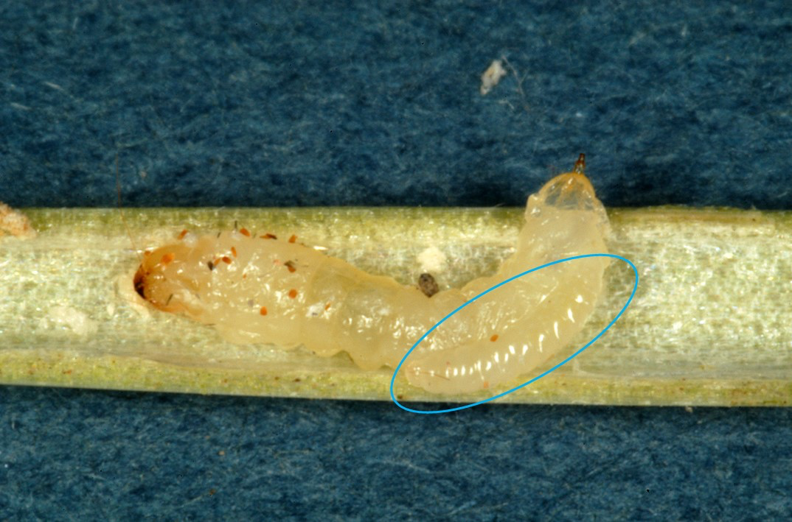
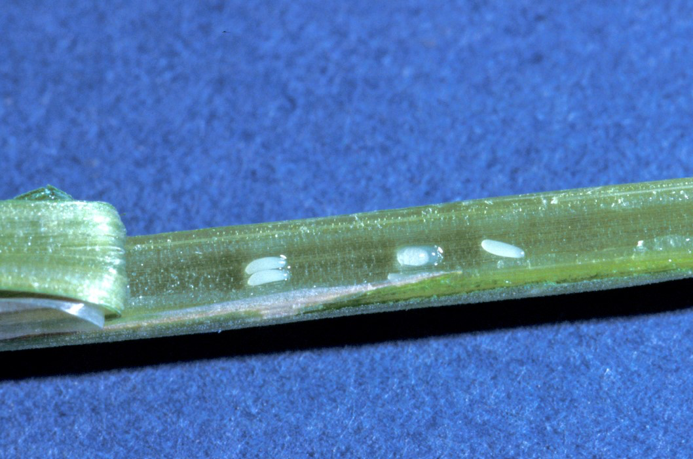

I co-consulted on the description for this Montana Wheat and Barley Committee post about parasitoids of wheat stem sawfly.
I contributed to the photography and videography used in this episode made by the Montana Wheat and Barley Committee
I co-consulted on the description for this Montana Wheat and Barley Committee post about parasitoids and wheat stem sawfly - and I took the photo featured in it.

I co-consulted on the description for this Montana Wheat and Barley Committee post about wheat stem sawfly eggs.
I co-authored a description about wheat stem sawfly ovipositors for the Montana Wheat and Barley Committee. I also took the picture of the ovipositor for their post.
I was featured on Montana State University’s Gradaute School website.
Lochlin and I were featured in an article about our master’s projects at MSU.
My photography was featured in an article about Locoweed.
My photography was used on the cover of an MSU Extension brochure discussing the best management practices for wheat stem sawfly.
David, Lochlin, and I made this short instructional video on how to survey a field for wheat stem sawfly damage. I acted in, filmed, and produced.